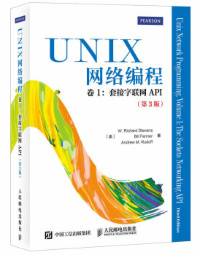
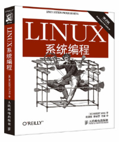
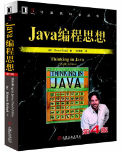
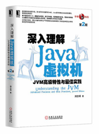
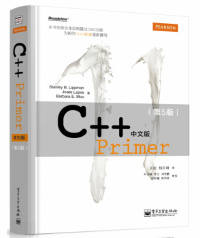

架构师必读书单 | “华仔，放学别走！” 第5期
你好，我是华仔。
在专栏更新的时候，很多同学留言希望我推荐一些书籍可以课后继续学习，正好我自己也是一个爱读书的人，最近 7 ~ 8 年，平均每年读书超过 50 本，因此今天就从我读过的书籍中选择一些让我印象非常深刻的推荐给你。我把这些书分为成长、技术和业务三个方面，因为架构师本身就是一个比较综合的职位，对综合技能要求很高，需要你从各方面提升自己。
我推荐的书是我从几百本中挑出来的，可以说是经典中的经典了，但这并不意味着只要看完这些书就够了，读书和技术提升是类似的，都是一个长期积累的过程，积累越多、收获越大。关于技术人员具体如何学习、如何提升，可以参考我之前在 InfoQ 上发表的文章《佛系程序员的月薪五万指南》。
每本书我习惯用“一句话推荐”，虽然显得比较“简短”，但我认为推荐语太多会框住你对书的理解，也担心剧透太多会影响你的阅读体验。好书就像美酒一样，一定要自己品尝才能真正体会其中美妙的滋味。
成长篇
《异类》 一句话推荐：颠覆你对成功的认知，例如：什么才是赢在起跑线？为何现在的富人都是大约生于 1955 年左右？
《随机漫步的傻瓜》 一句话推荐：只要看这一本书，你就能免受所有鸡汤的毒害！
《一万小时天才理论》 一句话推荐：1 万小时理论实践版，详细阐述了 1 万小时天才理论的 3 个关键点。
《情商》

一句话推荐：如果你认为你的老板还不如你聪明，那你需要好好看看这本书。
一句话推荐：如果你认为你的老板还不如你聪明，那你需要好好看看这本书。
《优秀到不能被忽视》 一句话推荐：不管是工作还是爱好，要想成功的原则是什么？很简单，“做别人愿意买单的事情”！
《影响力大师》 一句话推荐：天天立 flag，月月打自己的脸？不是你意志力不行，而是你方法不对，这本书可以给你一套完善、可操作的方法。（注：我以前读的版本叫《关键影响力》，新版改名叫《影响力大师》。）
技术篇
推荐技术书籍实际上是有一定局限性的，因为每个技术领域其实差异还是挺大的，就算都叫程序员，前端程序员、客户端程序员、后端程序员之间差异就很大；即使都是后端程序员，Linux 开发和 Windows 开发所需要的技术也不一样。因此我提炼了一个通用的技术书籍学习路径，不同技术领域可以按照这个路径去拆解：
- 深度学习你的代码运行环境：例如 Linux 程序员一定要深入学习 Linux 和 UNIX 的操作系统，iOS 程序员要深入学习 iOS 系统，前端程序员要深入学习浏览器原理，以此类推。
- 深入学习你的核心工具：例如 Java 程序员的核心工具是 Java，嵌入式程序员是 C，而 DBA 就不是学编程语言，而是学 MySQL 或者 Oracle 了。
- 深度学习领域基础知识：例如后端程序员的网络编程，前端程序员的动效知识，Android 客户端程序员的渲染知识，以及所有程序员都要求的算法知识等。
- 广泛学习技术领域的通用成熟技术：例如前端程序员要学的 React 和 Vue，Java 程序员要学的 Netty、Spring，互联网后端程序员的标配 MySQL、Redis 等。
下面我以 Linux 后端 Java 程序员为例，给你推荐相关技术书籍。
《UNIX 编程艺术》 一句话推荐：经典书籍，结合 UNIX 的历史来讲 UNIX 设计哲学，改变你对编程的认知和理解。
《UNIX 网络编程（卷 1）》  一句话推荐：经典书籍，网络编程必读。书很厚，重点是前三部分，不需要一次全部读懂，先通读，后面经常参考并且加深理解。
《UNIX 环境高级编程》

一句话推荐：经典书籍，Linux/UNIX C/C++ 程序员必读，就算是 Java、PHP、Python 等程序员也要通读一遍，了解系统底层能力有助于理解编程语言的各种实现。
一句话推荐：经典书籍，Linux/UNIX C/C++ 程序员必读，就算是 Java、PHP、Python 等程序员也要通读一遍，了解系统底层能力有助于理解编程语言的各种实现。
《Linux 系统编程》  一句话推荐：和《UNIX 环境高级编程》类似，Linux 平台可以看这本。
《TCP/IP 详解（卷 1）》 一句话推荐：经典书籍，全面介绍 TCP/IP 协议栈各种协议，重点看 TCP 和 IP 部分。
《算法之美》 一句话推荐：讲算法非常有趣的一本书，告诉你如何将算法应用于恋爱、生活、工作！
《算法设计与应用》 一句话推荐：将算法与实际应用结合起来，从应用引出算法然后进行算法推理，如果你数学很牛，可以挑战一下这本书；如果你数学很菜，那我更加推荐这本书，因为其中的算法原理和应用场景分析得清晰易懂。
《Java 编程思想》  一句话推荐：经典书籍，全面介绍 Java 编程，入门必备。
《深入理解 Java 虚拟机》  一句话推荐：全面理解 Java 虚拟机，原理介绍得深入浅出，很少有技术书籍我会优先推荐国内作者，而这本是我大力推荐的。
《C++ Primer》  一句话推荐：经典书籍，全面介绍 C++ 编程。当年我看了很多 C++ 书籍都不得要领，看了这本后豁然开朗。
业务篇
不管是普通程序员还是架构师，实践工作中都需要有一定的业务理解能力，而架构师的业务理解能力要求更高。理解业务一方面有利于更好地设计有针对性的架构或者方案，另外一方面也可以防止被产品经理坑 ：）
《增长黑客》
一句话推荐：肖恩·埃利斯和摩根·布朗的这本书理论体系完整，既给出了很多实践技巧，又总结了很多经验和需要避开的陷阱。
《需求》
一句话推荐：如何理解用户需求、如何满足用户需求、同样产品为何有的公司失败而有的公司取得了巨大成功？这本书让我茅塞顿开，建议技术同学都推荐这本书给你们的产品经理。
《淘宝十年产品事》 一句话推荐：这本书总结了淘宝 10 多年发展过程中产品遇到的各种坑和挑战，让你明白“罗马不是一天建成的”，产品也是逐步演化的（这也是我的“架构设计三原则”中的“演化原则”）。
《定位》 一句话推荐：告诉你如何做业务战略规划，有些偏重理论，架构师需要学习，程序员可以先放一边。
《宝洁制胜战略》 一句话推荐：结合宝洁的经验，提出了一套完善的战略规划和落地方法，理论与实践兼备，架构师必备，拿着这套方法论，就可以 PK 你的老板了。
最后我想说，收藏书单和囤书不是目的，更不能收获成长，只有像学习专栏那样坚持下来，坚持阅读、坚持记录、坚持分享，才能让你从书中品尝到最妙的美酒。